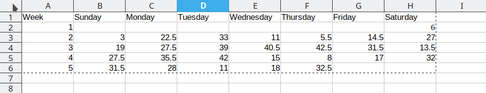
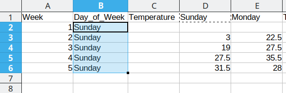
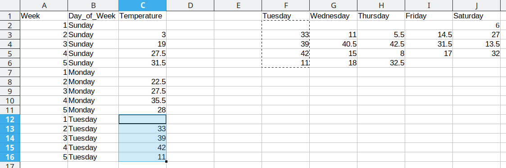

library(dplyr) # Data wrangling
library(tidyr) # Data rearranging
library(tibble) # data table7 Data Transformations
Happy families are all alike; every unhappy family is unhappy in its own way. - Leo Tolstoy
Tidy datasets are all alike, but every messy dataset is messy in its own way. - Hadley Wickham
Most of the time, data does not come in a format suitable for analysis. Spreadsheets are generally optimized for data viewing, rather than for statistical analysis - they may be laid out so that there are multiple observations in a single row (e.g., commonly a year’s worth of data, with monthly observations in each column).
Unfortunately, this type of data structure is not usually useful to us when we analyze or visualize the data.
7.1 Identifying the problem: Messy data
These datasets all display the same data: TB cases documented by the WHO in Afghanistan, Brazil, and China, between 1999 and 2000. There are 4 variables: country, year, cases, and population, but each table has a different layout.
| country | year | cases | population |
|---|---|---|---|
| Afghanistan | 1999 | 745 | 19987071 |
| Afghanistan | 2000 | 2666 | 20595360 |
| Brazil | 1999 | 37737 | 172006362 |
| Brazil | 2000 | 80488 | 174504898 |
| China | 1999 | 212258 | 1272915272 |
| China | 2000 | 213766 | 1280428583 |
Here, each observation is a single row, each variable is a column, and everything is nicely arranged for e.g. regression or statistical analysis. We can easily compute another measure, such as cases per 100,000 population, by taking cases/population * 100000 (this would define a new column).
| country | year | type | count |
|---|---|---|---|
| Afghanistan | 1999 | cases | 745 |
| Afghanistan | 1999 | population | 19987071 |
| Afghanistan | 2000 | cases | 2666 |
| Afghanistan | 2000 | population | 20595360 |
| Brazil | 1999 | cases | 37737 |
| Brazil | 1999 | population | 172006362 |
| Brazil | 2000 | cases | 80488 |
| Brazil | 2000 | population | 174504898 |
| China | 1999 | cases | 212258 |
| China | 1999 | population | 1272915272 |
| China | 2000 | cases | 213766 |
| China | 2000 | population | 1280428583 |
Here, we have 4 columns again, but we now have 12 rows: one of the columns is an indicator of which of two numerical observations is recorded in that row; a second column stores the value. This form of the data is more easily plotted in e.g. ggplot2, if we want to show lines for both cases and population, but computing per capita cases would be much more difficult in this form than in the arrangement in table 1.
In this form, we have two tables - one for population, and one for cases. Each year’s observations are in a separate column. This format is often found in separate sheets of an excel workbook. To work with this data, we’ll need to transform each table so that there is a column indicating which year an observation is from, and then merge the two tables together by country and year.
| country | year | rate |
|---|---|---|
| Afghanistan | 1999 | 745/19987071 |
| Afghanistan | 2000 | 2666/20595360 |
| Brazil | 1999 | 37737/172006362 |
| Brazil | 2000 | 80488/174504898 |
| China | 1999 | 212258/1272915272 |
| China | 2000 | 213766/1280428583 |
This form has only 3 columns, because the rate variable (which is a character) stores both the case count and the population. We can’t do anything with this format as it stands, because we can’t do math on data stored as characters. However, this form might be easier to read and record for a human being.
| country | 1999 | 2000 |
|---|---|---|
| Afghanistan | 745 | 2666 |
| Brazil | 37737 | 80488 |
| China | 212258 | 213766 |
| country | 1999 | 2000 |
|---|---|---|
| Afghanistan | 19987071 | 20595360 |
| Brazil | 172006362 | 174504898 |
| China | 1272915272 | 1280428583 |
| country | century | year | rate |
|---|---|---|---|
| Afghanistan | 19 | 99 | 745/19987071 |
| Afghanistan | 20 | 00 | 2666/20595360 |
| Brazil | 19 | 99 | 37737/172006362 |
| Brazil | 20 | 00 | 80488/174504898 |
| China | 19 | 99 | 212258/1272915272 |
| China | 20 | 00 | 213766/1280428583 |
Table 5 is very similar to table 3, but the year has been separated into two columns - century, and year. This is more common with year, month, and day in separate columns (or date and time in separate columns), often to deal with the fact that spreadsheets don’t always handle dates the way you’d hope they would.
These variations highlight the principles which can be said to define a tidy dataset:
- Each variable must have its own column
- Each observation must have its own row
- Each value must have its own cell
Try it out
Go back through the 5 tables and determine whether each table is tidy, and if it is not, which rule or rules it violates. Figure out what you would have to do in order to compute a standardized TB infection rate per 100,000 people.
Solution
table1 - this is tidy data. Computing a standardized infection rate is as simple as creating the variable rate = cases/population*100,000.
table2 - each variable does not have its own column (so a single year’s observation of one country actually has 2 rows). Computing a standardized infection rate requires moving cases and population so that each variable has its own column, and then you can proceed using the process in 1.
table3 - each value does not have its own cell (and each variable does not have its own column). In Table 3, you’d have to separate the numerator and denominator of each cell, convert each to a numeric variable, and then you could proceed as in 1.
table4a and table 4b - there are multiple observations in each row because there is not a column for year. To compute the rate, you’d need to “stack” the two columns in each table into a single column, add a year column that is 1999, 1999, 1999, 2000, 2000, 2000, and then merge the two tables. Then you could proceed as in 1.
table 5 - each variable does not have its own column (there are two columns for year, in addition to the issues noted in table3). Computing the rate would be similar to table 3; the year issues aren’t actually a huge deal unless you plot them, at which point 99 will seem to be bigger than 00 (so you’d need to combine the two year columns together first).
It is actually impossible to have a table that violates only one of the rules of tidy data - you have to violate at least two. So a simpler way to state the rules might be:
- Each dataset goes into its own table
- Each variable gets its own column
By the end of this course, you should have the skills to “tidy” each of these tables.
7.2 Pivot operations
It’s fairly common for data to come in forms which are convenient for either human viewing or data entry. Unfortunately, these forms aren’t necessarily the most friendly for analysis.

The two operations we’ll learn here are wide -> long and long -> wide.

This animation uses the R functions pivot_wider() and pivot_longer() Animation source, but the concept is the same in both R and python.
7.2.1 Longer
In many cases, the data come in what we might call “wide” form - some of the column names are not names of variables, but instead, are themselves values of another variable.
Tables 4a and 4b are good examples of data which is in “wide” form and should be in long(er) form: the years, which are variables, are column names, and the values are cases and population respectively.
table4a
## # A tibble: 3 × 3
## country `1999` `2000`
## * <chr> <int> <int>
## 1 Afghanistan 745 2666
## 2 Brazil 37737 80488
## 3 China 212258 213766
table4b
## # A tibble: 3 × 3
## country `1999` `2000`
## * <chr> <int> <int>
## 1 Afghanistan 19987071 20595360
## 2 Brazil 172006362 174504898
## 3 China 1272915272 1280428583The solution to this is to rearrange the data into “long form”: to take the columns which contain values and “stack” them, adding a variable to indicate which column each value came from. To do this, we have to duplicate the values in any column which isn’t being stacked (e.g. country, in both the example above and the image below).

Once our data are in long form, we can (if necessary) separate values that once served as column labels into actual variables, and we’ll have tidy(er) data.
7.2.1.1 Manual Method
We can do the wide-to-long transition manually, and doing so is actually instructive.
Consider the following table of average daily temperatures observed in Lincoln, NE in January 2022. This data is recorded in human-friendly form, in the approximate shape of a calendar. Each week has its own row, and each day has its own column.

Open up the spreadsheet containing this table on your computer and let’s work through converting it to long format together.
To convert this data to long format, the first thing we need to do is create a new column: Day_of_Week
Then, we need to create a temperature column to hold the daily average temperature values.
Now that we have the 3 columns our data will fit into set up, we can start moving data over.
First, we will repeat Sunday for each of the first 5 rows in Column B, copying the values from column D into the Temperature column (Column C). Once that is done, we delete the Sunday column from our dataset to prevent duplication.


Duplicating repeated data and moving Monday data over
We then duplicate the 5 week values, so that we can move another column of data over into our long format table.

Duplicating repeated data and moving Tuesday data over
We then duplicate the 5 week values, so that we can move another column of data over into our long format table.

Repeat these steps for each additional column

This process is repeated for the additional days, resulting in a final data set that looks like this:
Arranging the data for plotting
To do something useful with this data, we might want to sort by Week number to get a chronological ordering of the temperature values:
We could even add a new variable, Day_of_Year, which would make it much easier to plot. We have data starting January 1, so in this case, the day component of the date is also the day of the year.

You may at this point be wondering why we don’t just do this operation by hand… and it’s because copy-paste isn’t reproducible. I can’t guarantee that whomever did the copy-paste operation clicked on the correct cell in the spreadsheet, selected the correct values, and so on. But when I run the same code on the same file, I can be much more certain that I’ll get the same results.
(Also, it takes forever to do the copy-paste operations manually, and I’m sure you have better ways to use your valuable time!)
7.2.1.2 Computational Approach
In order to move from wide format to long format, we need to specify at least 2 of 3 possible quantities:
The values to keep to determine rows (the key)
The columns to merge into “long” form, where the column names are stored as a new variable
The values of interest
For most simple cases, if we have 2 of these 3 things, the pivot operation will go on as planned. Sadly, python and R require different defaults for which things are necessary, even if the fundamental operation is the same in each language.
Conversion using wide-to-long and merge/join statements in R
tba <- table4a %>%
pivot_longer(-country, names_to = "year", values_to = "cases")
tbb <- table4b %>%
pivot_longer(-country, names_to = "year", values_to = "population")
# To get the tidy data, we join the two together
# merging by country and year
left_join(tba, tbb, by = c("country", "year")) %>%
# make year numeric b/c it's dumb not to
mutate(year = as.numeric(year))
## # A tibble: 6 × 4
## country year cases population
## <chr> <dbl> <int> <int>
## 1 Afghanistan 1999 745 19987071
## 2 Afghanistan 2000 2666 20595360
## 3 Brazil 1999 37737 172006362
## 4 Brazil 2000 80488 174504898
## 5 China 1999 212258 1272915272
## 6 China 2000 213766 1280428583The columns are moved to a variable with the name passed to the argument “names_to” (hopefully, that is easy to remember), and the values are moved to a variable with the name passed to the argument “values_to” (again, hopefully easy to remember).
We identify ID variables (variables which we don’t want to pivot) by not including them in the pivot statement. We can do this in one of two ways:
- select only variables we want to pivot:
pivot_longer(table4a, cols =1999:2000, names_to = "year", values_to = "cases") - select variables we don’t want to pivot, using
-to remove them. (see above, where-countryexcludes country from the pivot operation)
Which option is easier depends how many things you’re pivoting (and how the columns are structured).
Some notes on selecting variables in R
Note: These details really only apply to the tidyverse - a series of R packages including dplyr and tidyr, among others.
There are many different ways you can select variables in tidyverse functions:
a character vector of column names passed to helper functions
all_ofandany_of.all_ofwill throw an error if something in the vector is missing,any_ofwill select anything that matches an entry in the vector but won’t error out if it doesn’t find some variable.Using a pattern, such as
starts_with,ends_with,contains,matches, andnum_range. These functions take a single character string as an argument and select all columns that match the character string in the way indicated by the function name.everythingmatches all variableslast_colmatches the last column
You can also use logical operators ! (taking the complement), & and | (and/or), c() to combine selections, and : to select a range of consecutive variables.
data(iris)
library(tidyselect) # this is the library with all of the functions described above
# it is automatically loaded with dplyr, tidyr, etc.
head(iris)
## Sepal.Length Sepal.Width Petal.Length Petal.Width Species
## 1 5.1 3.5 1.4 0.2 setosa
## 2 4.9 3.0 1.4 0.2 setosa
## 3 4.7 3.2 1.3 0.2 setosa
## 4 4.6 3.1 1.5 0.2 setosa
## 5 5.0 3.6 1.4 0.2 setosa
## 6 5.4 3.9 1.7 0.4 setosa
iris %>% select(matches("Sepal"))
## Sepal.Length Sepal.Width
## 1 5.1 3.5
## 2 4.9 3.0
## 3 4.7 3.2
## 4 4.6 3.1
## 5 5.0 3.6
## 6 5.4 3.9
## 7 4.6 3.4
## 8 5.0 3.4
## 9 4.4 2.9
## 10 4.9 3.1
## 11 5.4 3.7
## 12 4.8 3.4
## 13 4.8 3.0
## 14 4.3 3.0
## 15 5.8 4.0
## 16 5.7 4.4
## 17 5.4 3.9
## 18 5.1 3.5
## 19 5.7 3.8
## 20 5.1 3.8
## 21 5.4 3.4
## 22 5.1 3.7
## 23 4.6 3.6
## 24 5.1 3.3
## 25 4.8 3.4
## 26 5.0 3.0
## 27 5.0 3.4
## 28 5.2 3.5
## 29 5.2 3.4
## 30 4.7 3.2
## 31 4.8 3.1
## 32 5.4 3.4
## 33 5.2 4.1
## 34 5.5 4.2
## 35 4.9 3.1
## 36 5.0 3.2
## 37 5.5 3.5
## 38 4.9 3.6
## 39 4.4 3.0
## 40 5.1 3.4
## 41 5.0 3.5
## 42 4.5 2.3
## 43 4.4 3.2
## 44 5.0 3.5
## 45 5.1 3.8
## 46 4.8 3.0
## 47 5.1 3.8
## 48 4.6 3.2
## 49 5.3 3.7
## 50 5.0 3.3
## 51 7.0 3.2
## 52 6.4 3.2
## 53 6.9 3.1
## 54 5.5 2.3
## 55 6.5 2.8
## 56 5.7 2.8
## 57 6.3 3.3
## 58 4.9 2.4
## 59 6.6 2.9
## 60 5.2 2.7
## 61 5.0 2.0
## 62 5.9 3.0
## 63 6.0 2.2
## 64 6.1 2.9
## 65 5.6 2.9
## 66 6.7 3.1
## 67 5.6 3.0
## 68 5.8 2.7
## 69 6.2 2.2
## 70 5.6 2.5
## 71 5.9 3.2
## 72 6.1 2.8
## 73 6.3 2.5
## 74 6.1 2.8
## 75 6.4 2.9
## 76 6.6 3.0
## 77 6.8 2.8
## 78 6.7 3.0
## 79 6.0 2.9
## 80 5.7 2.6
## 81 5.5 2.4
## 82 5.5 2.4
## 83 5.8 2.7
## 84 6.0 2.7
## 85 5.4 3.0
## 86 6.0 3.4
## 87 6.7 3.1
## 88 6.3 2.3
## 89 5.6 3.0
## 90 5.5 2.5
## 91 5.5 2.6
## 92 6.1 3.0
## 93 5.8 2.6
## 94 5.0 2.3
## 95 5.6 2.7
## 96 5.7 3.0
## 97 5.7 2.9
## 98 6.2 2.9
## 99 5.1 2.5
## 100 5.7 2.8
## 101 6.3 3.3
## 102 5.8 2.7
## 103 7.1 3.0
## 104 6.3 2.9
## 105 6.5 3.0
## 106 7.6 3.0
## 107 4.9 2.5
## 108 7.3 2.9
## 109 6.7 2.5
## 110 7.2 3.6
## 111 6.5 3.2
## 112 6.4 2.7
## 113 6.8 3.0
## 114 5.7 2.5
## 115 5.8 2.8
## 116 6.4 3.2
## 117 6.5 3.0
## 118 7.7 3.8
## 119 7.7 2.6
## 120 6.0 2.2
## 121 6.9 3.2
## 122 5.6 2.8
## 123 7.7 2.8
## 124 6.3 2.7
## 125 6.7 3.3
## 126 7.2 3.2
## 127 6.2 2.8
## 128 6.1 3.0
## 129 6.4 2.8
## 130 7.2 3.0
## 131 7.4 2.8
## 132 7.9 3.8
## 133 6.4 2.8
## 134 6.3 2.8
## 135 6.1 2.6
## 136 7.7 3.0
## 137 6.3 3.4
## 138 6.4 3.1
## 139 6.0 3.0
## 140 6.9 3.1
## 141 6.7 3.1
## 142 6.9 3.1
## 143 5.8 2.7
## 144 6.8 3.2
## 145 6.7 3.3
## 146 6.7 3.0
## 147 6.3 2.5
## 148 6.5 3.0
## 149 6.2 3.4
## 150 5.9 3.0
iris %>% select(!matches("Sepal"))
## Petal.Length Petal.Width Species
## 1 1.4 0.2 setosa
## 2 1.4 0.2 setosa
## 3 1.3 0.2 setosa
## 4 1.5 0.2 setosa
## 5 1.4 0.2 setosa
## 6 1.7 0.4 setosa
## 7 1.4 0.3 setosa
## 8 1.5 0.2 setosa
## 9 1.4 0.2 setosa
## 10 1.5 0.1 setosa
## 11 1.5 0.2 setosa
## 12 1.6 0.2 setosa
## 13 1.4 0.1 setosa
## 14 1.1 0.1 setosa
## 15 1.2 0.2 setosa
## 16 1.5 0.4 setosa
## 17 1.3 0.4 setosa
## 18 1.4 0.3 setosa
## 19 1.7 0.3 setosa
## 20 1.5 0.3 setosa
## 21 1.7 0.2 setosa
## 22 1.5 0.4 setosa
## 23 1.0 0.2 setosa
## 24 1.7 0.5 setosa
## 25 1.9 0.2 setosa
## 26 1.6 0.2 setosa
## 27 1.6 0.4 setosa
## 28 1.5 0.2 setosa
## 29 1.4 0.2 setosa
## 30 1.6 0.2 setosa
## 31 1.6 0.2 setosa
## 32 1.5 0.4 setosa
## 33 1.5 0.1 setosa
## 34 1.4 0.2 setosa
## 35 1.5 0.2 setosa
## 36 1.2 0.2 setosa
## 37 1.3 0.2 setosa
## 38 1.4 0.1 setosa
## 39 1.3 0.2 setosa
## 40 1.5 0.2 setosa
## 41 1.3 0.3 setosa
## 42 1.3 0.3 setosa
## 43 1.3 0.2 setosa
## 44 1.6 0.6 setosa
## 45 1.9 0.4 setosa
## 46 1.4 0.3 setosa
## 47 1.6 0.2 setosa
## 48 1.4 0.2 setosa
## 49 1.5 0.2 setosa
## 50 1.4 0.2 setosa
## 51 4.7 1.4 versicolor
## 52 4.5 1.5 versicolor
## 53 4.9 1.5 versicolor
## 54 4.0 1.3 versicolor
## 55 4.6 1.5 versicolor
## 56 4.5 1.3 versicolor
## 57 4.7 1.6 versicolor
## 58 3.3 1.0 versicolor
## 59 4.6 1.3 versicolor
## 60 3.9 1.4 versicolor
## 61 3.5 1.0 versicolor
## 62 4.2 1.5 versicolor
## 63 4.0 1.0 versicolor
## 64 4.7 1.4 versicolor
## 65 3.6 1.3 versicolor
## 66 4.4 1.4 versicolor
## 67 4.5 1.5 versicolor
## 68 4.1 1.0 versicolor
## 69 4.5 1.5 versicolor
## 70 3.9 1.1 versicolor
## 71 4.8 1.8 versicolor
## 72 4.0 1.3 versicolor
## 73 4.9 1.5 versicolor
## 74 4.7 1.2 versicolor
## 75 4.3 1.3 versicolor
## 76 4.4 1.4 versicolor
## 77 4.8 1.4 versicolor
## 78 5.0 1.7 versicolor
## 79 4.5 1.5 versicolor
## 80 3.5 1.0 versicolor
## 81 3.8 1.1 versicolor
## 82 3.7 1.0 versicolor
## 83 3.9 1.2 versicolor
## 84 5.1 1.6 versicolor
## 85 4.5 1.5 versicolor
## 86 4.5 1.6 versicolor
## 87 4.7 1.5 versicolor
## 88 4.4 1.3 versicolor
## 89 4.1 1.3 versicolor
## 90 4.0 1.3 versicolor
## 91 4.4 1.2 versicolor
## 92 4.6 1.4 versicolor
## 93 4.0 1.2 versicolor
## 94 3.3 1.0 versicolor
## 95 4.2 1.3 versicolor
## 96 4.2 1.2 versicolor
## 97 4.2 1.3 versicolor
## 98 4.3 1.3 versicolor
## 99 3.0 1.1 versicolor
## 100 4.1 1.3 versicolor
## 101 6.0 2.5 virginica
## 102 5.1 1.9 virginica
## 103 5.9 2.1 virginica
## 104 5.6 1.8 virginica
## 105 5.8 2.2 virginica
## 106 6.6 2.1 virginica
## 107 4.5 1.7 virginica
## 108 6.3 1.8 virginica
## 109 5.8 1.8 virginica
## 110 6.1 2.5 virginica
## 111 5.1 2.0 virginica
## 112 5.3 1.9 virginica
## 113 5.5 2.1 virginica
## 114 5.0 2.0 virginica
## 115 5.1 2.4 virginica
## 116 5.3 2.3 virginica
## 117 5.5 1.8 virginica
## 118 6.7 2.2 virginica
## 119 6.9 2.3 virginica
## 120 5.0 1.5 virginica
## 121 5.7 2.3 virginica
## 122 4.9 2.0 virginica
## 123 6.7 2.0 virginica
## 124 4.9 1.8 virginica
## 125 5.7 2.1 virginica
## 126 6.0 1.8 virginica
## 127 4.8 1.8 virginica
## 128 4.9 1.8 virginica
## 129 5.6 2.1 virginica
## 130 5.8 1.6 virginica
## 131 6.1 1.9 virginica
## 132 6.4 2.0 virginica
## 133 5.6 2.2 virginica
## 134 5.1 1.5 virginica
## 135 5.6 1.4 virginica
## 136 6.1 2.3 virginica
## 137 5.6 2.4 virginica
## 138 5.5 1.8 virginica
## 139 4.8 1.8 virginica
## 140 5.4 2.1 virginica
## 141 5.6 2.4 virginica
## 142 5.1 2.3 virginica
## 143 5.1 1.9 virginica
## 144 5.9 2.3 virginica
## 145 5.7 2.5 virginica
## 146 5.2 2.3 virginica
## 147 5.0 1.9 virginica
## 148 5.2 2.0 virginica
## 149 5.4 2.3 virginica
## 150 5.1 1.8 virginica
iris %>% select(ends_with("Width"))
## Sepal.Width Petal.Width
## 1 3.5 0.2
## 2 3.0 0.2
## 3 3.2 0.2
## 4 3.1 0.2
## 5 3.6 0.2
## 6 3.9 0.4
## 7 3.4 0.3
## 8 3.4 0.2
## 9 2.9 0.2
## 10 3.1 0.1
## 11 3.7 0.2
## 12 3.4 0.2
## 13 3.0 0.1
## 14 3.0 0.1
## 15 4.0 0.2
## 16 4.4 0.4
## 17 3.9 0.4
## 18 3.5 0.3
## 19 3.8 0.3
## 20 3.8 0.3
## 21 3.4 0.2
## 22 3.7 0.4
## 23 3.6 0.2
## 24 3.3 0.5
## 25 3.4 0.2
## 26 3.0 0.2
## 27 3.4 0.4
## 28 3.5 0.2
## 29 3.4 0.2
## 30 3.2 0.2
## 31 3.1 0.2
## 32 3.4 0.4
## 33 4.1 0.1
## 34 4.2 0.2
## 35 3.1 0.2
## 36 3.2 0.2
## 37 3.5 0.2
## 38 3.6 0.1
## 39 3.0 0.2
## 40 3.4 0.2
## 41 3.5 0.3
## 42 2.3 0.3
## 43 3.2 0.2
## 44 3.5 0.6
## 45 3.8 0.4
## 46 3.0 0.3
## 47 3.8 0.2
## 48 3.2 0.2
## 49 3.7 0.2
## 50 3.3 0.2
## 51 3.2 1.4
## 52 3.2 1.5
## 53 3.1 1.5
## 54 2.3 1.3
## 55 2.8 1.5
## 56 2.8 1.3
## 57 3.3 1.6
## 58 2.4 1.0
## 59 2.9 1.3
## 60 2.7 1.4
## 61 2.0 1.0
## 62 3.0 1.5
## 63 2.2 1.0
## 64 2.9 1.4
## 65 2.9 1.3
## 66 3.1 1.4
## 67 3.0 1.5
## 68 2.7 1.0
## 69 2.2 1.5
## 70 2.5 1.1
## 71 3.2 1.8
## 72 2.8 1.3
## 73 2.5 1.5
## 74 2.8 1.2
## 75 2.9 1.3
## 76 3.0 1.4
## 77 2.8 1.4
## 78 3.0 1.7
## 79 2.9 1.5
## 80 2.6 1.0
## 81 2.4 1.1
## 82 2.4 1.0
## 83 2.7 1.2
## 84 2.7 1.6
## 85 3.0 1.5
## 86 3.4 1.6
## 87 3.1 1.5
## 88 2.3 1.3
## 89 3.0 1.3
## 90 2.5 1.3
## 91 2.6 1.2
## 92 3.0 1.4
## 93 2.6 1.2
## 94 2.3 1.0
## 95 2.7 1.3
## 96 3.0 1.2
## 97 2.9 1.3
## 98 2.9 1.3
## 99 2.5 1.1
## 100 2.8 1.3
## 101 3.3 2.5
## 102 2.7 1.9
## 103 3.0 2.1
## 104 2.9 1.8
## 105 3.0 2.2
## 106 3.0 2.1
## 107 2.5 1.7
## 108 2.9 1.8
## 109 2.5 1.8
## 110 3.6 2.5
## 111 3.2 2.0
## 112 2.7 1.9
## 113 3.0 2.1
## 114 2.5 2.0
## 115 2.8 2.4
## 116 3.2 2.3
## 117 3.0 1.8
## 118 3.8 2.2
## 119 2.6 2.3
## 120 2.2 1.5
## 121 3.2 2.3
## 122 2.8 2.0
## 123 2.8 2.0
## 124 2.7 1.8
## 125 3.3 2.1
## 126 3.2 1.8
## 127 2.8 1.8
## 128 3.0 1.8
## 129 2.8 2.1
## 130 3.0 1.6
## 131 2.8 1.9
## 132 3.8 2.0
## 133 2.8 2.2
## 134 2.8 1.5
## 135 2.6 1.4
## 136 3.0 2.3
## 137 3.4 2.4
## 138 3.1 1.8
## 139 3.0 1.8
## 140 3.1 2.1
## 141 3.1 2.4
## 142 3.1 2.3
## 143 2.7 1.9
## 144 3.2 2.3
## 145 3.3 2.5
## 146 3.0 2.3
## 147 2.5 1.9
## 148 3.0 2.0
## 149 3.4 2.3
## 150 3.0 1.8
iris %>% select(Sepal.Length:Petal.Length)
## Sepal.Length Sepal.Width Petal.Length
## 1 5.1 3.5 1.4
## 2 4.9 3.0 1.4
## 3 4.7 3.2 1.3
## 4 4.6 3.1 1.5
## 5 5.0 3.6 1.4
## 6 5.4 3.9 1.7
## 7 4.6 3.4 1.4
## 8 5.0 3.4 1.5
## 9 4.4 2.9 1.4
## 10 4.9 3.1 1.5
## 11 5.4 3.7 1.5
## 12 4.8 3.4 1.6
## 13 4.8 3.0 1.4
## 14 4.3 3.0 1.1
## 15 5.8 4.0 1.2
## 16 5.7 4.4 1.5
## 17 5.4 3.9 1.3
## 18 5.1 3.5 1.4
## 19 5.7 3.8 1.7
## 20 5.1 3.8 1.5
## 21 5.4 3.4 1.7
## 22 5.1 3.7 1.5
## 23 4.6 3.6 1.0
## 24 5.1 3.3 1.7
## 25 4.8 3.4 1.9
## 26 5.0 3.0 1.6
## 27 5.0 3.4 1.6
## 28 5.2 3.5 1.5
## 29 5.2 3.4 1.4
## 30 4.7 3.2 1.6
## 31 4.8 3.1 1.6
## 32 5.4 3.4 1.5
## 33 5.2 4.1 1.5
## 34 5.5 4.2 1.4
## 35 4.9 3.1 1.5
## 36 5.0 3.2 1.2
## 37 5.5 3.5 1.3
## 38 4.9 3.6 1.4
## 39 4.4 3.0 1.3
## 40 5.1 3.4 1.5
## 41 5.0 3.5 1.3
## 42 4.5 2.3 1.3
## 43 4.4 3.2 1.3
## 44 5.0 3.5 1.6
## 45 5.1 3.8 1.9
## 46 4.8 3.0 1.4
## 47 5.1 3.8 1.6
## 48 4.6 3.2 1.4
## 49 5.3 3.7 1.5
## 50 5.0 3.3 1.4
## 51 7.0 3.2 4.7
## 52 6.4 3.2 4.5
## 53 6.9 3.1 4.9
## 54 5.5 2.3 4.0
## 55 6.5 2.8 4.6
## 56 5.7 2.8 4.5
## 57 6.3 3.3 4.7
## 58 4.9 2.4 3.3
## 59 6.6 2.9 4.6
## 60 5.2 2.7 3.9
## 61 5.0 2.0 3.5
## 62 5.9 3.0 4.2
## 63 6.0 2.2 4.0
## 64 6.1 2.9 4.7
## 65 5.6 2.9 3.6
## 66 6.7 3.1 4.4
## 67 5.6 3.0 4.5
## 68 5.8 2.7 4.1
## 69 6.2 2.2 4.5
## 70 5.6 2.5 3.9
## 71 5.9 3.2 4.8
## 72 6.1 2.8 4.0
## 73 6.3 2.5 4.9
## 74 6.1 2.8 4.7
## 75 6.4 2.9 4.3
## 76 6.6 3.0 4.4
## 77 6.8 2.8 4.8
## 78 6.7 3.0 5.0
## 79 6.0 2.9 4.5
## 80 5.7 2.6 3.5
## 81 5.5 2.4 3.8
## 82 5.5 2.4 3.7
## 83 5.8 2.7 3.9
## 84 6.0 2.7 5.1
## 85 5.4 3.0 4.5
## 86 6.0 3.4 4.5
## 87 6.7 3.1 4.7
## 88 6.3 2.3 4.4
## 89 5.6 3.0 4.1
## 90 5.5 2.5 4.0
## 91 5.5 2.6 4.4
## 92 6.1 3.0 4.6
## 93 5.8 2.6 4.0
## 94 5.0 2.3 3.3
## 95 5.6 2.7 4.2
## 96 5.7 3.0 4.2
## 97 5.7 2.9 4.2
## 98 6.2 2.9 4.3
## 99 5.1 2.5 3.0
## 100 5.7 2.8 4.1
## 101 6.3 3.3 6.0
## 102 5.8 2.7 5.1
## 103 7.1 3.0 5.9
## 104 6.3 2.9 5.6
## 105 6.5 3.0 5.8
## 106 7.6 3.0 6.6
## 107 4.9 2.5 4.5
## 108 7.3 2.9 6.3
## 109 6.7 2.5 5.8
## 110 7.2 3.6 6.1
## 111 6.5 3.2 5.1
## 112 6.4 2.7 5.3
## 113 6.8 3.0 5.5
## 114 5.7 2.5 5.0
## 115 5.8 2.8 5.1
## 116 6.4 3.2 5.3
## 117 6.5 3.0 5.5
## 118 7.7 3.8 6.7
## 119 7.7 2.6 6.9
## 120 6.0 2.2 5.0
## 121 6.9 3.2 5.7
## 122 5.6 2.8 4.9
## 123 7.7 2.8 6.7
## 124 6.3 2.7 4.9
## 125 6.7 3.3 5.7
## 126 7.2 3.2 6.0
## 127 6.2 2.8 4.8
## 128 6.1 3.0 4.9
## 129 6.4 2.8 5.6
## 130 7.2 3.0 5.8
## 131 7.4 2.8 6.1
## 132 7.9 3.8 6.4
## 133 6.4 2.8 5.6
## 134 6.3 2.8 5.1
## 135 6.1 2.6 5.6
## 136 7.7 3.0 6.1
## 137 6.3 3.4 5.6
## 138 6.4 3.1 5.5
## 139 6.0 3.0 4.8
## 140 6.9 3.1 5.4
## 141 6.7 3.1 5.6
## 142 6.9 3.1 5.1
## 143 5.8 2.7 5.1
## 144 6.8 3.2 5.9
## 145 6.7 3.3 5.7
## 146 6.7 3.0 5.2
## 147 6.3 2.5 5.0
## 148 6.5 3.0 5.2
## 149 6.2 3.4 5.4
## 150 5.9 3.0 5.1These selection helpers can be extremely useful when choosing columns to pivot.
Conversion using wide-to-long and merge/join statements in Python
A similar operation can be done in python using pd.melt. Think of “melting” your data down from a metal object to a liquid. (There actually used to be an R package that used cast/melt as the terms for pivot wider/longer, but it has been superseded by pivot_wider and pivot_longer syntax).
As in R, we identify the variables that we DON’T want to pivot, but in python syntax, these are called id_vars. Then, as in R, we need to specify the names of the columns we want to have at the end. In Python, we also have to specify value variables: variables that we will be pivoting (so we specify both those we are pivoting and those we aren’t). Remember, id_vars are variables that we would copy-paste over and over with each set of variables in the manual pivot operation, where value_vars are the set of columns we want to combine into variable:value pairs.
import pandas as pd
table4a = r.table4a # get variable from R within python
table4b = r.table4b
tba = pd.melt(table4a, id_vars = ['country'],
value_vars = ['1999', '2000'],
var_name = 'year',
value_name = 'cases')
tbb = pd.melt(table4a, id_vars = ['country'],
value_vars = ['1999', '2000'],
var_name = 'year',
value_name = 'population')
final = pd.merge(tba, tbb, on= ['country', 'year'])
# convert year to numeric from string
final["year"] = pd.to_numeric(final["year"])
final
## country year cases population
## 0 Afghanistan 1999 745 745
## 1 Brazil 1999 37737 37737
## 2 China 1999 212258 212258
## 3 Afghanistan 2000 2666 2666
## 4 Brazil 2000 80488 80488
## 5 China 2000 213766 213766
Conversion using new variables, appending tables, and wide-to-long statements in R
If we wanted to avoid the table join, we could do this process another way: first, we would add a column to each tibble called id with values “cases” and “population” respectively. Then, we could bind the two tables together by row (so stack them on top of each other). We could then do a wide-to-long pivot, followed by a long-to-wide pivot to get our data into tidy form.
# Create ID columns
table4a.x <- table4a %>% mutate(id = "cases")
table4b.x <- table4b %>% mutate(id = "population")
# Create one table
table4 <- bind_rows(table4a.x, table4b.x)
table4_long <- table4 %>%
# rearrange columns
select(country, id, `1999`, `2000`) %>%
# Don't pivot country or id
pivot_longer(-c(country:id), names_to = "year", values_to = "count")
# Intermediate fully-long form
table4_long
## # A tibble: 12 × 4
## country id year count
## <chr> <chr> <chr> <int>
## 1 Afghanistan cases 1999 745
## 2 Afghanistan cases 2000 2666
## 3 Brazil cases 1999 37737
## 4 Brazil cases 2000 80488
## 5 China cases 1999 212258
## 6 China cases 2000 213766
## 7 Afghanistan population 1999 19987071
## 8 Afghanistan population 2000 20595360
## 9 Brazil population 1999 172006362
## 10 Brazil population 2000 174504898
## 11 China population 1999 1272915272
## 12 China population 2000 1280428583
# make wider, with case and population columns
table4_tidy <- table4_long %>%
pivot_wider(names_from = id, values_from = count)
table4_tidy
## # A tibble: 6 × 4
## country year cases population
## <chr> <chr> <int> <int>
## 1 Afghanistan 1999 745 19987071
## 2 Afghanistan 2000 2666 20595360
## 3 Brazil 1999 37737 172006362
## 4 Brazil 2000 80488 174504898
## 5 China 1999 212258 1272915272
## 6 China 2000 213766 1280428583
Conversion using new variables, appending tables, and wide-to-long statements in Python
If we wanted to avoid the table join, we could do this process another way: first, we would add a column to each tibble called id with values “cases” and “population” respectively. Then, we could bind the two tables together by row (so stack them on top of each other). We could then do a wide-to-long pivot, followed by a long-to-wide pivot to get our data into tidy form.
# Create ID columns
table4a_x = r.table4a.assign(id= "cases")
table4b_x = r.table4b.assign(id = "population")
# Create one table
table4 = pd.concat([table4a_x, table4b_x])
table4
## country 1999 2000 id
## 0 Afghanistan 745 2666 cases
## 1 Brazil 37737 80488 cases
## 2 China 212258 213766 cases
## 0 Afghanistan 19987071 20595360 population
## 1 Brazil 172006362 174504898 population
## 2 China 1272915272 1280428583 population
table4_long = pd.melt(table4,
id_vars = ['country', 'id'],
value_vars = ['1999', '2000'],
var_name = 'year')
# Intermediate fully-long form
table4_long
# make wider, with case and population columns
# Index is the columns we want to keep that ID a unique combination of variables
# Columns are the columns that become new labels
# There should be a single value for each combination of index and the column variable(s)
## country id year value
## 0 Afghanistan cases 1999 745
## 1 Brazil cases 1999 37737
## 2 China cases 1999 212258
## 3 Afghanistan population 1999 19987071
## 4 Brazil population 1999 172006362
## 5 China population 1999 1272915272
## 6 Afghanistan cases 2000 2666
## 7 Brazil cases 2000 80488
## 8 China cases 2000 213766
## 9 Afghanistan population 2000 20595360
## 10 Brazil population 2000 174504898
## 11 China population 2000 1280428583
table4_tidy = pd.pivot(table4_long,
index = ['country', 'year'],
columns = ['id'],
values = 'value')
table4_tidy
## id cases population
## country year
## Afghanistan 1999 745 19987071
## 2000 2666 20595360
## Brazil 1999 37737 172006362
## 2000 80488 174504898
## China 1999 212258 1272915272
## 2000 213766 1280428583
table4_tidy.reset_index() # to remove the index if you want the normal data table
## id country year cases population
## 0 Afghanistan 1999 745 19987071
## 1 Afghanistan 2000 2666 20595360
## 2 Brazil 1999 37737 172006362
## 3 Brazil 2000 80488 174504898
## 4 China 1999 212258 1272915272
## 5 China 2000 213766 1280428583We will talk more about long-to-wide pivot operations below. For now, it’s enough to know that the long-to-wide operation can be useful in getting your data into tidy form.
Transitioning from wide data to long data isn’t too complicated in most situations – and it definitely beats doing that operation by hand, even for short, simple tables.
It takes some getting used to, but once you get a feel for how to do these operations, you’ll be able to handle messy data reproducibly - instead of describing how you did XYZ operations in Excel, you can provide a script that will take the original data as input and spit out clean, analysis-ready data as output.
Because wide-to-long transformations end up combining values from several columns into a single column, you can run into issues with type conversions that happen implicitly. If you try to pivot_longer() using a character column mixed in with numeric columns, your “value” column will be converted to a character automatically.
7.2.2 Wider
While it’s very common to need to transform data into a longer format, it’s not that uncommon to need to do the reverse operation. When an observation is scattered across multiple rows, your data is too long and needs to be made wider again.
Table 2 is an example of a table that is in long format but needs to be converted to a wider layout to be “tidy” - there are separate rows for cases and population, which means that a single observation (one year, one country) has two rows.

In R, long-to-wide conversion operations are performed using pivot_wider()
pivot_wider()table2 %>%
pivot_wider(names_from = type, values_from = count)
## # A tibble: 6 × 4
## country year cases population
## <chr> <int> <int> <int>
## 1 Afghanistan 1999 745 19987071
## 2 Afghanistan 2000 2666 20595360
## 3 Brazil 1999 37737 172006362
## 4 Brazil 2000 80488 174504898
## 5 China 1999 212258 1272915272
## 6 China 2000 213766 1280428583
In python, long-to-wide conversion operations are performed using pd.pivot()
pd.pivot()table2 = r.table2
pd.pivot(table2, index = ['country', 'year'], columns = 'type', values = 'count')
# We can get rid of the index by adding a .reset_index() to the end of the command
## type cases population
## country year
## Afghanistan 1999 745 19987071
## 2000 2666 20595360
## Brazil 1999 37737 172006362
## 2000 80488 174504898
## China 1999 212258 1272915272
## 2000 213766 1280428583
pd.pivot(table2, index = ['country', 'year'], columns = 'type', values = 'count').reset_index()
## type country year cases population
## 0 Afghanistan 1999 745 19987071
## 1 Afghanistan 2000 2666 20595360
## 2 Brazil 1999 37737 172006362
## 3 Brazil 2000 80488 174504898
## 4 China 1999 212258 1272915272
## 5 China 2000 213766 1280428583Try it out!
Let’s work with the dog breed traits data to see if we can get it into long format and then back into wide format based on some specific criteria.
breed_traits <- read.csv('https://raw.githubusercontent.com/rfordatascience/tidytuesday/master/data/2022/2022-02-01/breed_traits.csv') %>%
# There's something funky with the spaces in this data frame... so make them ASCII
# (this fixes the encoding issues)
mutate(Breed = iconv(Breed, to = "ASCII//translit"))from unidecode import unidecode # Change unicode characters to ascii
breed_traits = pd.read_csv('https://raw.githubusercontent.com/rfordatascience/tidytuesday/master/data/2022/2022-02-01/breed_traits.csv')
breed_traits.Breed = breed_traits["Breed"].transform(unidecode)You may remember that the breed trait data includes a number of 1-5 numeric variables indicating score on various dimensions such as affection, shedding, openness, and playfulness.
Task 1: Take all of the 1-5 numeric variables in the dataset and make a long-format dataset. Choose 5 breeds of your choice. Then, using your dataset, plot each breed’s score, with each dimension as a separate facet.
Your code in ggplot2 would look something like this:
ggplot(long_data, aes(x = breed, y = value)) +
geom_col() +
facet_wrap(~variable) +
coord_flip()And in plotnine, it would look something like this:
from plotnine import *
ggplot(long_data, aes(x = "breed", y = "value")) +
geom_col() +
facet_wrap('variable') +
coord_flip()
R solution
library(ggplot2)
library(dplyr)
library(tidyr)
my_breeds <- breed_traits %>%
filter(Breed %in% c("Beagles", "Dachshunds", "Samoyeds", "Russell Terriers", "Lhasa Apsos")) %>%
# Remove variables that aren't 1-5
pivot_longer(-c(Breed, Coat.Type, Coat.Length), names_to = "Trait", values_to = "value")
my_breeds %>%
ggplot(aes(x = Breed, y = value)) + geom_col() + facet_wrap(~Trait) +
coord_flip()
python solution
from plotnine import *
breed_list = ["Beagles", "Dachshunds", "Samoyeds", "Russell Terriers", "Lhasa Apsos"]
my_breeds = breed_traits.loc[breed_traits.Breed.isin(breed_list)].\
melt(id_vars = ['Breed', 'Coat Type', 'Coat Length'],
value_name = 'value',
var_name = 'Trait')
ggplot(my_breeds, aes(x = "Breed", y = "value")) + geom_col() + facet_wrap("Trait") + coord_flip()
## <ggplot: (8773127358946)>
##
## /__w/Stat151/Stat151/renv/python/virtualenvs/renv-python-3.8/lib/python3.8/site-packages/plotnine/utils.py:371: FutureWarning: The frame.append method is deprecated and will be removed from pandas in a future version. Use pandas.concat instead.Task 2: Using your data from the previous task, determine which traits are 5 = good and which traits are 5 = bad (This may not be the same list for everyone!). Create a new variable in the data frame that encodes this information. There are several ways to do this task in R and in Python, so see if you can find a way that works for you.
R solution
good_traits <- c("Affectionate.With.Family", "Good.With.Young.Children", "Good.With.Other.Dogs", "Openness.To.Strangers", "Playfulness.Level", "Adaptability.Level", "Trainability.Level")
my_breeds <- my_breeds %>%
mutate(trait_type = ifelse(Trait %in% good_traits, "Good", "Bad"))
python solution
import numpy as np
good_traits = ["Affectionate With Family", "Good With Young Children", "Good With Other Dogs", "Openness To Strangers", "Playfulness Level", "Adaptability Level", "Trainability Level"]
# https://stackoverflow.com/questions/19913659/pandas-conditional-creation-of-a-series-dataframe-column
my_breeds["trait_type"] = np.where(my_breeds["Trait"].isin(good_traits), 'Good', 'Bad')Task 3: Using your data from the previous task, summarize your data so that you calculate the average score for good and bad traits for each dog breed. For each Breed, your solution should have two rows: one for good traits, one for bad traits. It may help to sketch out what a solution should look like for each Breed before you begin.
R solution
summary_traits = data.frame()
for (i in unique(my_breeds$Breed)) {
sub_df <- filter(my_breeds, Breed == i)
sub_df_good <- filter(sub_df, trait_type == "Good")
sub_df_bad <- filter(sub_df, trait_type == "Bad")
summary_traits <- rbind(
summary_traits,
data.frame(Breed = i,
trait_type = c("Good", "Bad"),
average = c(mean(sub_df_good$value, na.rm = T), mean(sub_df_bad$value)))
)
}
summary_traits
## Breed trait_type average
## 1 Beagles Good 3.857143
## 2 Beagles Bad 2.857143
## 3 Dachshunds Good 4.000000
## 4 Dachshunds Bad 3.000000
## 5 Samoyeds Good 4.428571
## 6 Samoyeds Bad 3.428571
## 7 Russell Terriers Good 4.285714
## 8 Russell Terriers Bad 3.428571
## 9 Lhasa Apsos Good 3.571429
## 10 Lhasa Apsos Bad 2.714286
python solution
summary_traits = pd.DataFrame()
for i in np.unique(my_breeds.Breed):
sub_df = my_breeds.loc[my_breeds.Breed == i]
sub_df_good = sub_df.loc[sub_df.trait_type == "Good"]
sub_df_bad = sub_df.loc[sub_df.trait_type == "Bad"]
summary_traits = pd.concat([
summary_traits,
pd.DataFrame({'Breed': [i, i], 'trait_type': ["Good", "Bad"],
'average': [sub_df_good.value.mean(), sub_df_bad.value.mean()]})
]
)
# Reset index so it shows the row number
summary_traits = summary_traits.reset_index().drop(['index'], axis = 1)
summary_traits
## Breed trait_type average
## 0 Beagles Good 3.857143
## 1 Beagles Bad 2.857143
## 2 Dachshunds Good 4.000000
## 3 Dachshunds Bad 3.000000
## 4 Lhasa Apsos Good 3.571429
## 5 Lhasa Apsos Bad 2.714286
## 6 Russell Terriers Good 4.285714
## 7 Russell Terriers Bad 3.428571
## 8 Samoyeds Good 4.428571
## 9 Samoyeds Bad 3.428571Task 4: Pivot your summary data frame from long to wide to get an overall summary of the good and bad for each of your 5 breeds. Plot the good score on the x axis, the bad score on the y axis, and use the breed name as the label. Use geom_label instead of geom_point.
R solution
summary_traits %>%
pivot_wider(id_cols = 1, names_from = 2, values_from = 3) %>%
ggplot(aes(x = Good, y = Bad, label = Breed)) + geom_label()
python solution
tmp = summary_traits.pivot(index = "Breed", columns = 'trait_type', values = 'average')
tmp["Breed"] = tmp.index # Need to recreate the Breed column
ggplot(tmp, aes(x = "Good", y = "Bad", label = "Breed")) + geom_label()
## <ggplot: (8773127083897)>